Semblanza histórica de Honduras
Honduras es una nación centroamericana cuya identidad se ha formado a partir de las culturas indígenas, la herencia colonial, los procesos de independencia y las luchas por construir una sociedad soberana. Su historia refleja la diversidad de sus pueblos, la riqueza de sus tradiciones y el esfuerzo de generaciones que contribuyeron a la formación de la república.
Francisco Morazán y el ideal unionista
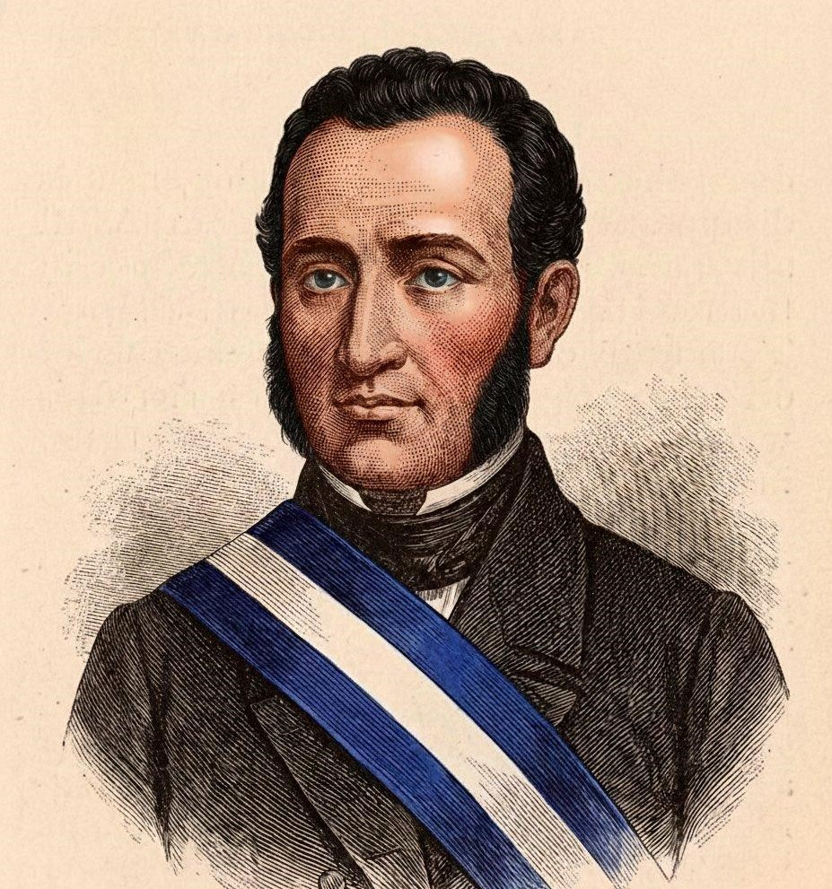
Francisco Morazán Quezada (1792-1842) fue uno de los principales líderes políticos y militares de Centroamérica durante el siglo XIX. Nacido en Tegucigalpa, defendió el ideal de una Centroamérica unida, con instituciones republicanas y principios liberales. Como presidente de la República Federal de Centroamérica entre 1830 y 1839, impulsó reformas orientadas a modernizar la educación, la administración pública y las relaciones entre el Estado y la Iglesia.
Su pensamiento unionista se fundamentaba en la idea de que las provincias centroamericanas podían alcanzar mayor estabilidad, desarrollo y capacidad política mediante una federación. Aunque la República Federal se desintegró debido a conflictos políticos, económicos y regionales, su visión continúa siendo un referente del ideal de integración centroamericana. Morazán murió fusilado en San José, Costa Rica, en 1842, y es recordado como uno de los máximos próceres de Honduras.
Los próceres patrios y la construcción de la nación
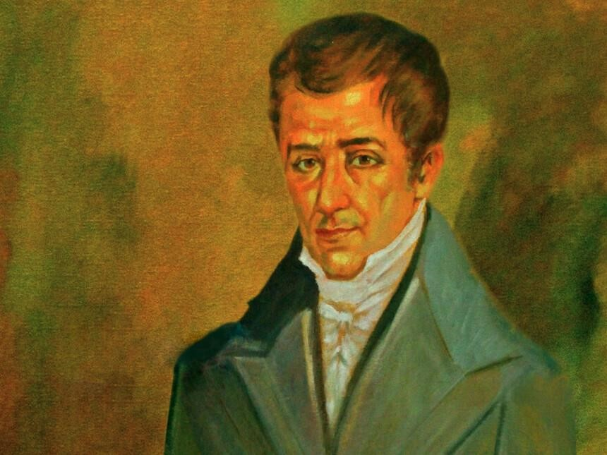
Entre las figuras fundamentales de la historia hondureña se encuentra José Cecilio del Valle (1777-1834), intelectual y político conocido por su participación en el proceso de independencia de Centroamérica. Fue una figura destacada del pensamiento ilustrado y de los debates sobre la organización política de las nuevas repúblicas.
También sobresale Dionisio de Herrera (1781-1850), primer jefe de Estado de Honduras, quien contribuyó a establecer las bases de la organización política hondureña después de la independencia. José Trinidad Cabañas (1805-1871), militar y presidente de Honduras, defendió ideas liberales y la integración centroamericana. A estas figuras se suman otros personajes históricos vinculados con la independencia, la educación, la soberanía y la construcción de las instituciones nacionales.
El legado de los próceres patrios representa valores como la libertad, la justicia, la educación, la soberanía y la responsabilidad ciudadana. Su estudio permite comprender que la identidad nacional no depende únicamente de símbolos patrios, sino también del conocimiento de la historia y del compromiso con el bienestar colectivo.
Etnias y pueblos vivos de Honduras
Honduras es un país multicultural y plurilingüe en el que conviven pueblos indígenas y comunidades afrodescendientes que mantienen expresiones propias de identidad, lengua, espiritualidad, gastronomía, música y organización comunitaria. Reconocer esta diversidad es fundamental para comprender la riqueza cultural del territorio y valorar las contribuciones de sus pueblos.
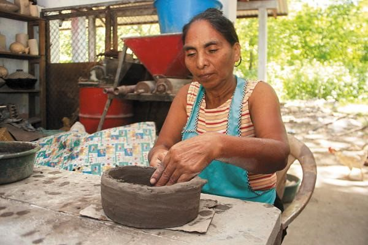
El pueblo lenca constituye uno de los pueblos indígenas de mayor presencia histórica en Honduras, especialmente en departamentos como Lempira, Intibucá, La Paz y zonas de Santa Bárbara y Comayagua. Su identidad se expresa en la agricultura, la alfarería, los tejidos, las celebraciones comunitarias y la gastronomía tradicional. Las artesanías de barro y el conocimiento transmitido entre generaciones representan una parte importante de su patrimonio cultural.
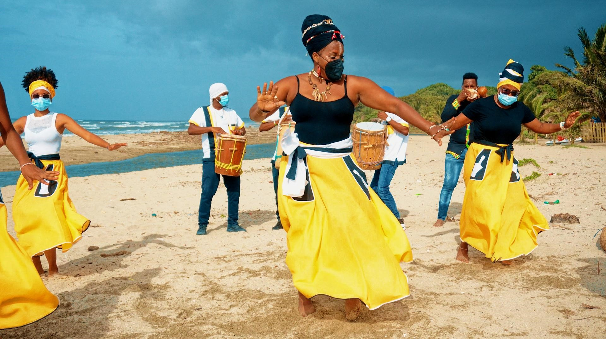
El pueblo garífuna posee una identidad afroindígena vinculada con la historia del Caribe. En Honduras, sus comunidades se encuentran principalmente a lo largo de la costa norte y en las Islas de la Bahía. Su cultura destaca por la lengua garífuna, los ritmos de percusión, la danza punta, las ceremonias tradicionales y una gastronomía basada en el coco, el plátano, la yuca y los productos del mar. Su patrimonio constituye una de las expresiones culturales más representativas del Caribe hondureño.
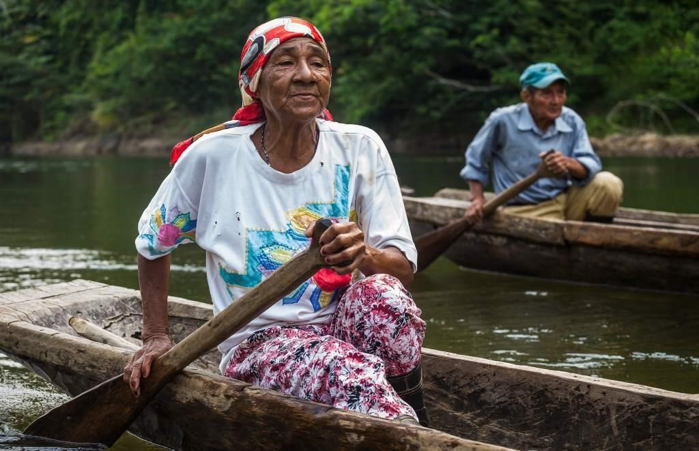
El pueblo misquito habita principalmente en la región de La Mosquitia, en Gracias a Dios y zonas vecinas. Su vida cultural está relacionada con los ríos, las lagunas, la pesca, la navegación y los bosques tropicales. La lengua misquita continúa siendo un elemento fundamental de identidad, junto con sus conocimientos sobre el medio natural, sus formas de organización comunitaria y sus tradiciones orales.
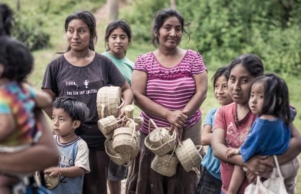
El pueblo tolupán se concentra principalmente en áreas montañosas de Yoro y sectores de Francisco Morazán. Sus comunidades conservan conocimientos tradicionales sobre agricultura, plantas, recursos naturales y organización social. La preservación de su identidad también está vinculada con la defensa de sus territorios, sus costumbres y las formas de transmisión de sus conocimientos ancestrales.
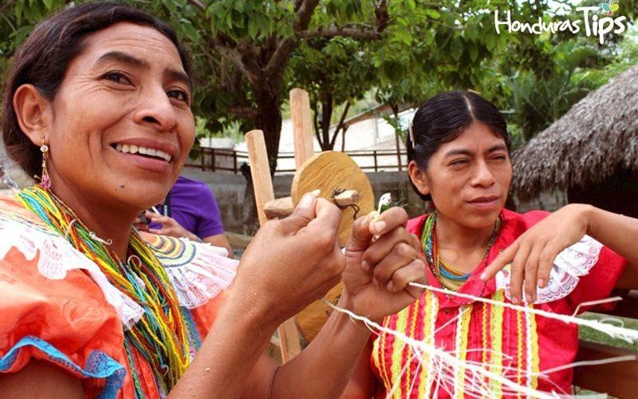
El pueblo chortí, de raíz maya, se encuentra principalmente en el occidente de Honduras, especialmente en Copán y Ocotepeque. Su herencia cultural está relacionada con el legado maya de la región, las prácticas agrícolas, las celebraciones comunitarias y la conservación de conocimientos ancestrales. La cercanía con el Parque Arqueológico de Copán permite apreciar la relación histórica entre el territorio y las antiguas sociedades mayas.
La identidad hondureña también comprende otros pueblos indígenas y afrodescendientes, entre ellos pech, tawahkas, nahuas y comunidades negras de habla inglesa. Esta diversidad demuestra que Honduras posee una identidad nacional compartida que se enriquece mediante distintas lenguas, memorias históricas y tradiciones.Catálogo visual de la gastronomía típica nacional
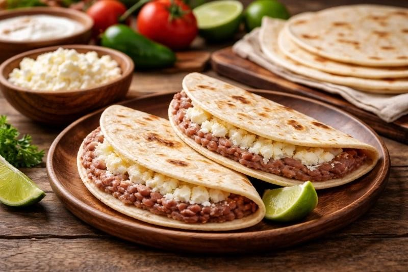
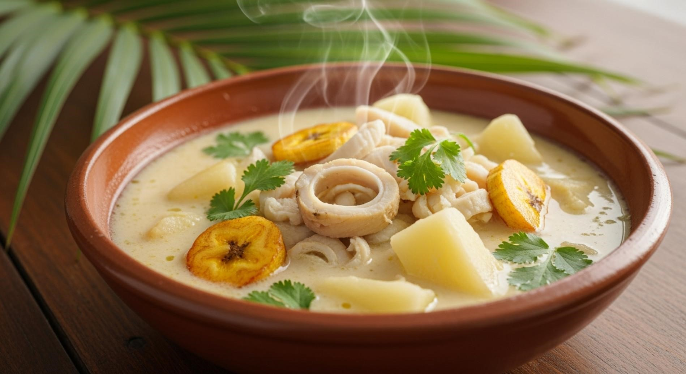
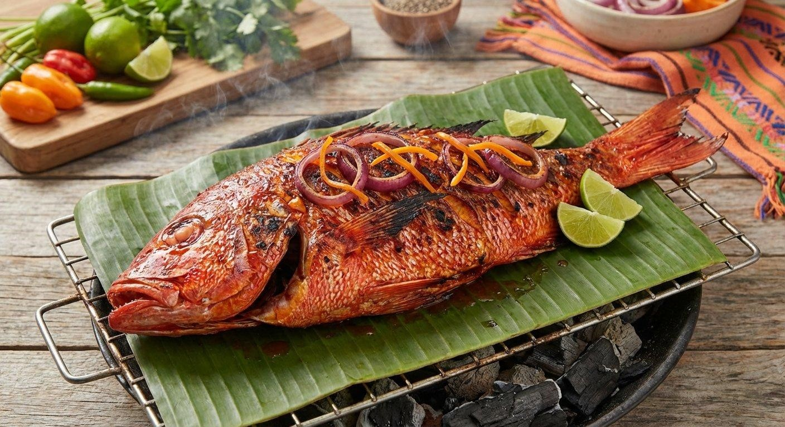
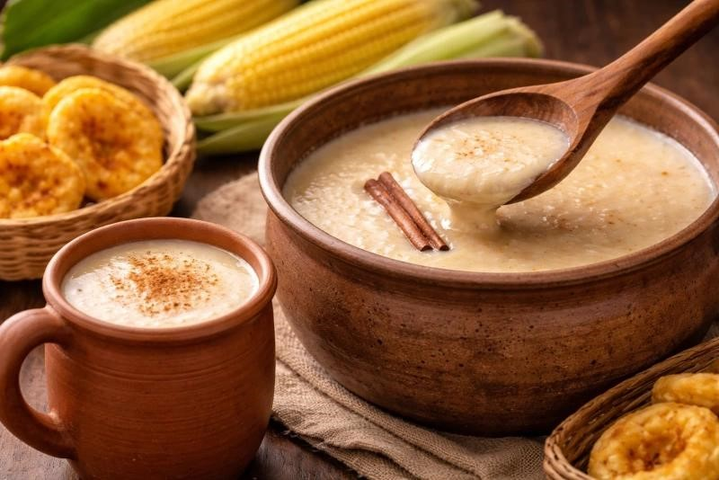
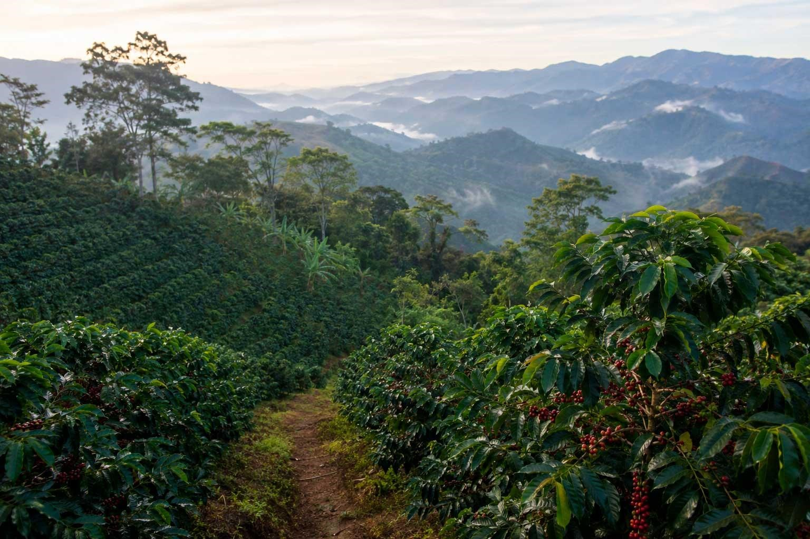
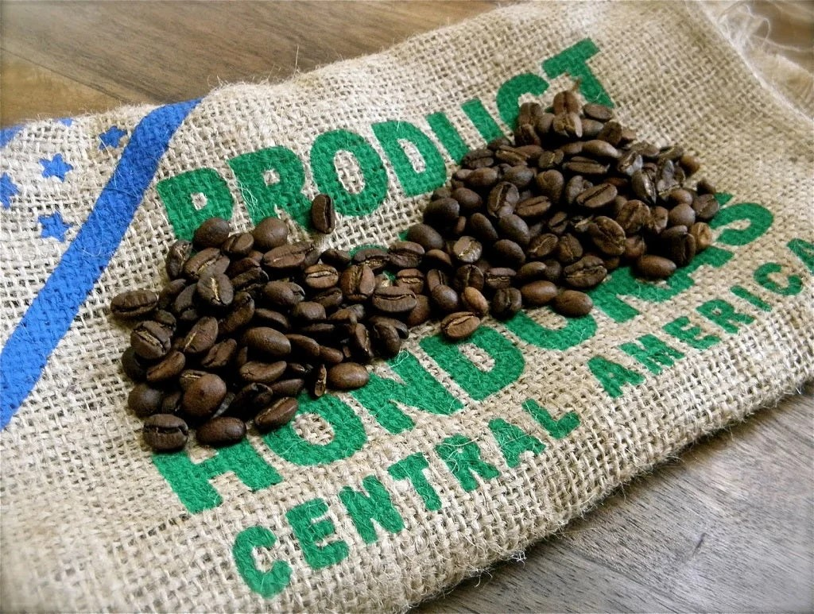